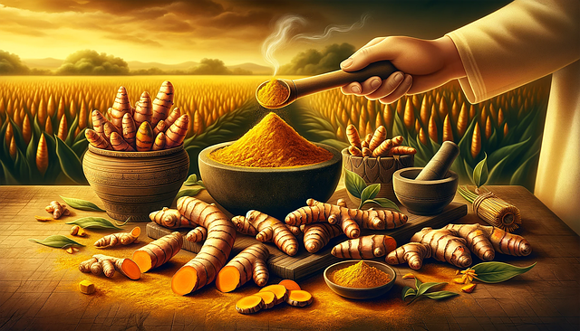
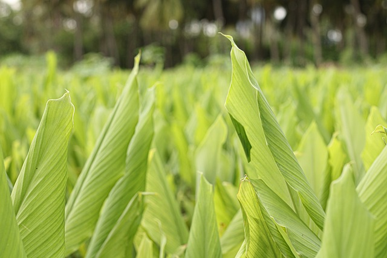
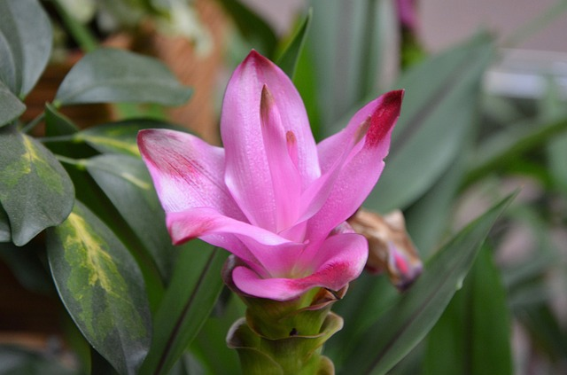

Interesting Facts
Fact 1: The use of turmeric dates back nearly 4000 years to the Vedic culture in India, where it was used as a culinary spice and had some religious significance. It probably reached China by 700 AD, East Africa by 800 AD, West Africa by 1200 AD, and Jamaica in the eighteenth century. In 1280, Marco Polo described this spice, marveling at a vegetable that exhibited qualities so similar to that of saffron.
Fact 2: Turmeric is one of the key ingredients in many Asian dishes, imparting a mustard-like, earthy aroma and pungent, slightly bitter flavor to foods. It is a principal ingredient of curry powders. Although typically used in its dried, powdered form, turmeric also is used fresh, like ginger. It is used in many products such as canned beverages, baked products, dairy products, ice cream, yogurt, yellow cakes, orange juice, biscuits, popcorn, cereals and sauces.
Fact 3: Turmeric paper, also called curcuma paper or in German literature, Curcumapapier, is paper steeped in a tincture of turmeric and allowed to dry. It is used in chemical analysis as an indicator for acidity and alkalinity. The paper is yellow in acidic and neutral solutions and turns brown to reddish-brown in alkaline solutions, with transition between pH of 7.4 and 9.2.
